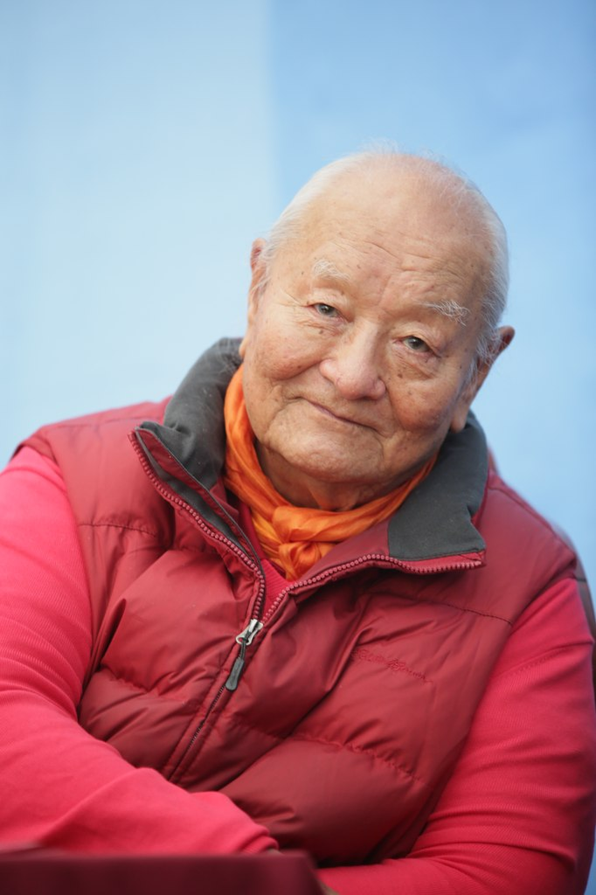

| Ринпоче |
| Тема 2 |
| Тема 3 |
| Тема 4 |
| Frames |
|
-
Параграф для тестирования шрифтов и прописывания стилевых особенностей
-
Параграф для тестирования шрифтов и прописывания стилевых особенностей
-
Параграф для тестирования шрифтов и прописывания стилевых особенностей
А это так, просто текст для контейнера DIV
-
Параграф для тестирования шрифтов и прописывания стилевых особенностей
-
Параграф для тестирования шрифтов и прописывания стилевых особенностей
-
Параграф для тестирования шрифтов и прописывания стилевых особенностей
А это так, просто текст для контейнера DIV
Чогьял Намкай Норбу Ринпоче - тибетский буддийский Учитель, профессор Института востоковедения Неаполитанского университета, автор многих книг, в числе которых «Кристалл и путь света», «Йога сновидений» и «Дзогчен — состояние самосовершенства». Его важнейшая деятельность состоит в сохранении и передаче учения Дзогчен — самой сущности духовных традиций Тибета. Он был первым, кто открыл доступ к этому учению заинтересованной западной аудитории.
Краткая биография Чогьяла Намкая Норбу
Чогьял Намкай Норбу родился в Дерге, что в Восточном Тибете, в 1938 году. Еще в детстве его признали перерождением великого учителя Дзогчен Адзома Другпы (1842-1924), а впоследствии шестнадцатый Кармапа признал его перерождением Шабдрунга Нгаванга Намгьяла (1594-1651), первого Дхармараджи Бутана.
Еще в юные годы он завершил строгий путь традиционного образования, получал учения от нескольких великих учителей своего времени. В 1955 году он встречает Чангчуба Дордже (1826-1961), своего главного учителя Дзогчен, чей образ жизни и способ обучения будут его вдохновлять всю жизнь.
В 1960 году, в результате ухудшения социальной и политической ситуации в Тибете, он переезжает в Италию, приняв приглашение известного востоковеда проф. Джузеппе Туччи, что послужило реальным толчком к распространению тибетской культуры на Западе. В начале 60-х он работает в Институте Ближнего и Дальнего Востока в Риме, а впоследствии, с 1962 по 1992, преподает тибетский и монгольский язык и литературу в Восточном Университете Неаполя. Его академические работы выявляют глубокое знание тибетской культуры, всегда подпитываемое стойким желанием сохранить живым и востребованным уникальное наследие культуры Тибета.
В середине 60-х годов, после нескольких лет преподавания янтра-йоги в Неаполе, Чогьял Намкай Норбу начинает давать учения Дзогчен, которые с растущим интересом встретили вначале в Италии, потом на всем Западе. В 1981 году он основывает первую Дзогчен-общину в Арчидоссо, провинция Тоскана, и дает ей название «Меригар». В дальнейшем, тысячи людей становятся членами Дзогчен-общины во всем мире. Появляются центры в США, в различных частях Европы, в Латинской Америке, России и Австралии.
В 1988 году Чогьял Намкай Норбу основывает A.S.I.A. (Ассоциацию международной солидарности в Азии), неправительственную организацию, задачей которой стало удовлетворение потребностей тибетского населения в образовании и медицине.
В 1989 году Чогьял Намкай Норбу основывает институт «Шанг-Шунг», который ставит своей целью сохранение тибетской культуры, способствуя развитию знания о ней и её распространению.
|
 |